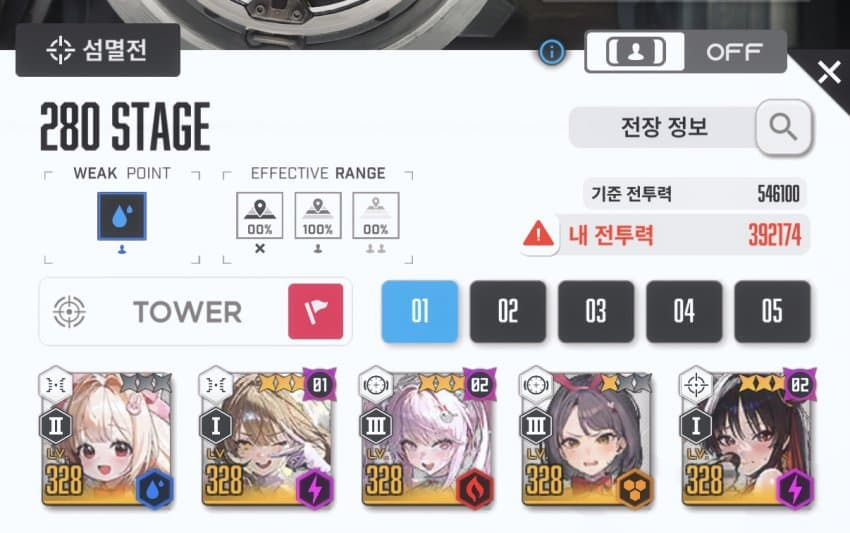

클리어 스펙
앨리스 747 3330 소장품r15
크러스트 111 0000 소장품x
바밀크 111 0000 소장품 r0
돌니스 애목단 풀강 3330
전멸기 이후 화상을 어떻게 넘기냐가 문제였는데 돌니스 힐로 안버텨짐 ㅋㅋ;
그래서 그냥 크러스트넣고 상태이상해제함
크러스트 톡톡이 3번 갈기면 화상 풀리더라고
그리고 원래 수니스 쓰다가 바밀크로 바꾼거임 수니스는 화상 안풀리더라 왠진 모르겠슴...
280층 미는사람들 있으면 조금이라도 도움됐으면 좋겠삼